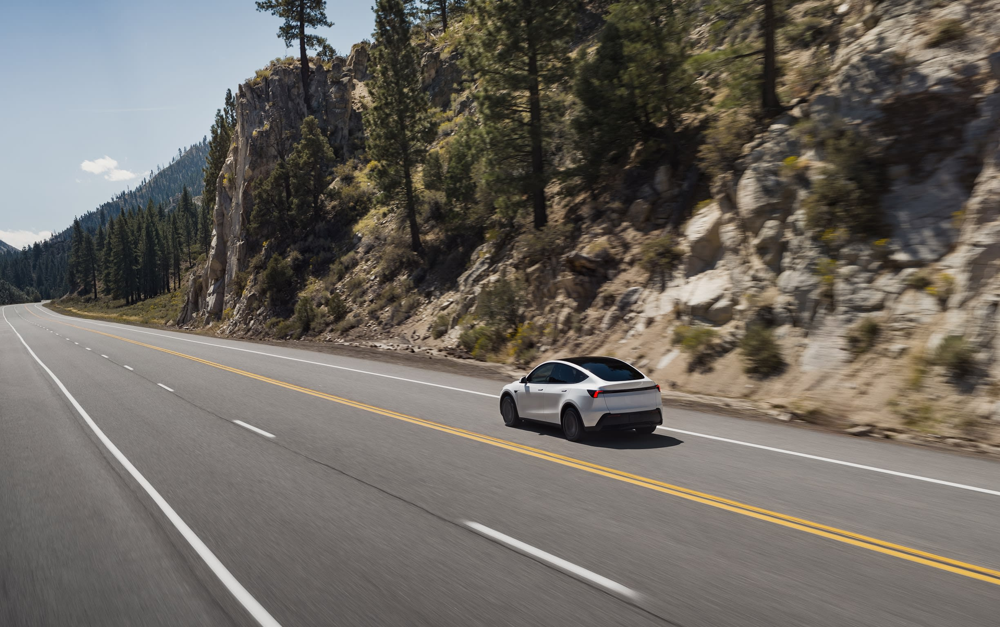

Хүрэх зай
Танд хэрэгтэй бүх зай
Нэг цэнэглэлтээр EPA тооцоогоор 517 км (321 миль) хүртэл явна. Урт замд Trip Planner таны маршрутад Supercharger-ийн зогсоолуудыг нэмж өгнө.
15 мин
257 км (160 миль) хүртэл цэнэглэнэ2
80,000+
Дэлхий даяарх Supercharger
99%
Supercharger-ийн ажиллах хувь
